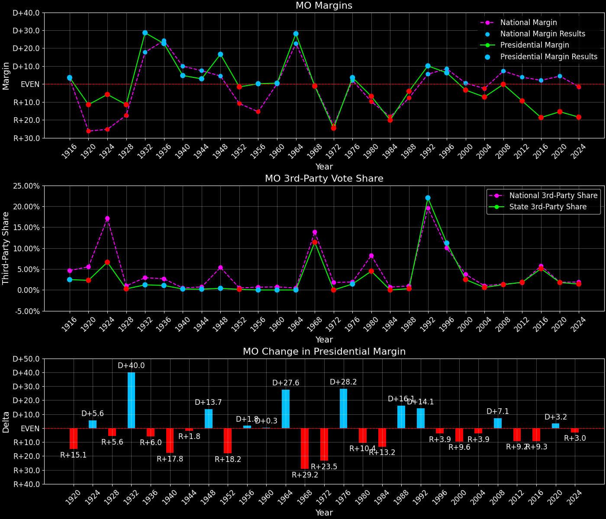
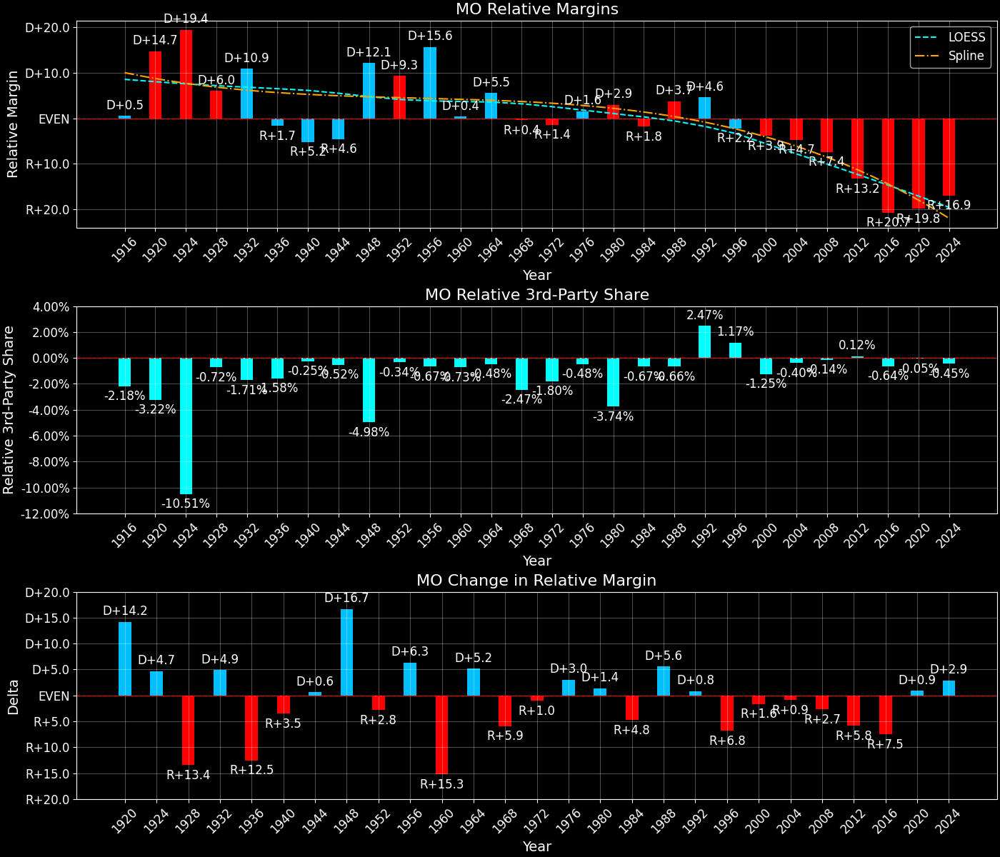
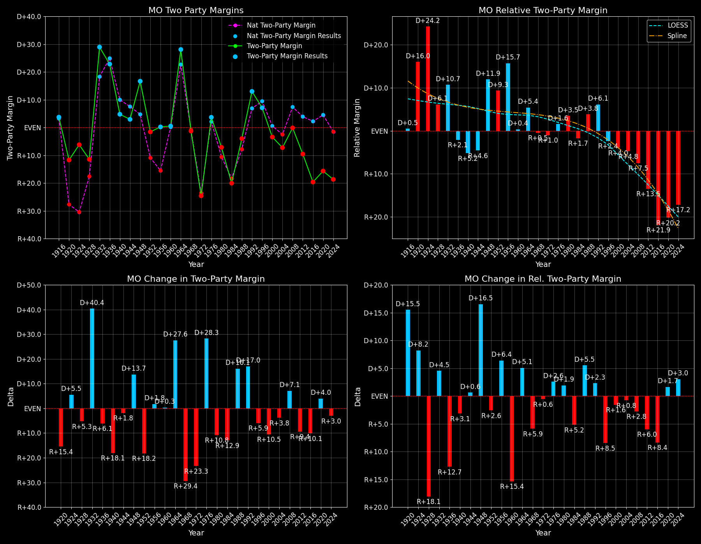

← Back to Map

Margins · 3rd-Party share · Pres. deltas

Relative margins · Relative 3rd-Party · Rel. deltas
Missouri (MO) — Total Data
| Year | EVs | D | R | State Margin | Nat. Margin | Rel. Margin | Total votes |
|---|
| 1968 | 12 | 783,684(43.8%) | 800,764(44.8%) | R+1.0 | R+0.6 | R+0.4 | 1,789,063 |
| 1972 | 12 | 690,610(37.7%) | 1,142,011(62.3%) | R+24.6(Δ R+23.7) | R+23.5(Δ R+23.0) | R+1.1(Δ R+0.7) | 1,832,621 |
| 1976 | 12 | 993,484(51.8%) | 925,023(48.2%) | D+3.6(Δ D+28.2) | D+2.2(Δ D+25.7) | D+1.4(Δ D+2.5) | 1,918,507 |
| 1980 | 12 | 928,363(44.8%) | 1,068,028(51.5%) | R+6.7(Δ R+10.3) | R+9.9(Δ R+12.1) | D+3.2(Δ D+1.8) | 2,073,838 |
| 1984 | 11 | 848,583(40.0%) | 1,274,188(60.0%) | R+20.0(Δ R+13.3) | R+18.1(Δ R+8.2) | R+1.9(Δ R+5.1) | 2,122,771 |
| 1988 | 11 | 1,001,619(48.0%) | 1,084,953(52.0%) | R+4.0(Δ D+16.1) | R+7.7(Δ D+10.4) | D+3.7(Δ D+5.7) | 2,086,572 |
| 1992 | 11 | 1,053,873(44.2%) | 811,159(34.0%) | D+10.2(Δ D+14.2) | D+5.6(Δ D+13.3) | D+4.6(Δ D+0.9) | 2,383,773 |
| 1996 | 11 | 1,025,935(48.0%) | 890,014(41.7%) | D+6.4(Δ R+3.8) | D+8.6(Δ D+3.0) | R+2.2(Δ R+6.8) | 2,136,772 |
| 2000 | 11 | 1,111,073(47.1%) | 1,189,841(50.4%) | R+3.3(Δ R+9.7) | D+0.5(Δ R+8.0) | R+3.9(Δ R+1.7) | 2,359,739 |
| 2004 | 11 | 1,258,247(46.2%) | 1,455,079(53.4%) | R+7.2(Δ R+3.9) | R+2.5(Δ R+3.0) | R+4.8(Δ R+0.9) | 2,724,074 |
| 2008 | 11 | 1,441,911(49.2%) | 1,445,814(49.4%) | R+0.1(Δ D+7.1) | D+7.3(Δ D+9.7) | R+7.4(Δ R+2.6) | 2,928,146 |
| 2012 | 10 | 1,223,796(44.4%) | 1,482,440(53.8%) | R+9.4(Δ R+9.2) | D+3.9(Δ R+3.4) | R+13.2(Δ R+5.9) | 2,757,322 |
| 2016 | 10 | 1,071,068(38.2%) | 1,594,512(56.9%) | R+18.7(Δ R+9.3) | D+2.1(Δ R+1.8) | R+20.8(Δ R+7.5) | 2,801,449 |
| 2020 | 10 | 1,242,973(41.2%) | 1,712,454(56.8%) | R+15.6(Δ D+3.1) | D+4.4(Δ D+2.3) | R+20.0(Δ D+0.8) | 3,014,903 |
| 2024 | 10 | 1,200,599(40.1%) | 1,751,986(58.5%) | R+18.4(Δ R+2.8) | R+1.5(Δ R+6.0) | R+16.9(Δ D+3.2) | 2,995,327 |
Column explanations
- Δ
- Change (delta) in the value from the previous election year.
- Year
- Election year.
- EVs
- Number of electoral votes allocated to this state or unit.
- D
- Number of votes for the Democratic candidate (raw count(pct%)).
- R
- Number of votes for the Republican candidate (raw count(pct%)).
- State Margin
- Margin between the two major-party candidates, including third-party votes ((D - R)/total).
- Nat. Margin
- The national presidential margin for that year, including third-party votes ((D_total - R_total)/total_votes).
- Rel. Margin
- The presidential margin relative to the national presidential margin (Margin - Nat. Margin).
- Total votes
- Total voter turnout or ballots cast (when provided).
Missouri (MO) — Third-Party Data
| Year | Other votes | State 3rd-Party Share | 3rd-Party Nat. Share | 3rd-Party Rel. Share |
|---|
| 1968 | 204,615(11.4%) | 11.44% | 13.59% | -2.15% |
| 1972 | 0(0.0%) | 0.00% | 0.09% | -0.09% |
| 1976 | 0(0.0%) | 0.00% | 0.33% | -0.33% |
| 1980 | 77,447(3.7%) | 3.73% | 6.98% | -3.24% |
| 1984 | 0(0.0%) | 0.00% | 0.12% | -0.12% |
| 1988 | 0(0.0%) | 0.00% | 0.21% | -0.21% |
| 1992 | 518,741(21.8%) | 21.76% | 19.23% | 2.53% |
| 1996 | 220,823(10.3%) | 10.33% | 9.68% | 0.66% |
| 2000 | 58,825(2.5%) | 2.49% | 3.65% | -1.16% |
| 2004 | 10,748(0.4%) | 0.39% | 0.84% | -0.44% |
| 2008 | 40,421(1.4%) | 1.38% | 1.38% | 0.00% |
| 2012 | 51,086(1.9%) | 1.85% | 1.62% | 0.23% |
| 2016 | 135,869(4.8%) | 4.85% | 5.54% | -0.69% |
| 2020 | 59,476(2.0%) | 1.97% | 1.84% | 0.13% |
| 2024 | 42,742(1.4%) | 1.43% | 1.88% | -0.45% |
Column explanations
- Year
- Election year.
- Other votes
- Number of votes for third-party (other) candidates (raw count(pct%)).
- State 3rd-Party Share
- Share of the vote received by third-party (other) candidates.
- 3rd-Party Nat. Share
- The national third-party share for that year (3rd-Party votes / total votes).
- 3rd-Party Rel. Share
- Third-party share relative to the national third-party share (3rd-Party share - Nat. 3rd-Party share).

Two-party margins · relative · deltas
Missouri (MO) — Two-Party Data
| Year | 2-Party Margin | 2-Party Nat. Margin | 2-Party Rel. Margin |
|---|
| 1968 | R+1.1 | R+0.7 | R+0.4 |
| 1972 | R+24.6(Δ R+23.6) | R+23.6(Δ R+22.9) | R+1.1(Δ R+0.7) |
| 1976 | D+3.6(Δ D+28.2) | D+2.2(Δ D+25.8) | D+1.4(Δ D+2.4) |
| 1980 | R+7.0(Δ R+10.6) | R+10.6(Δ R+12.8) | D+3.6(Δ D+2.3) |
| 1984 | R+20.0(Δ R+13.1) | R+18.1(Δ R+7.5) | R+1.9(Δ R+5.6) |
| 1988 | R+4.0(Δ D+16.1) | R+7.8(Δ D+10.4) | D+3.8(Δ D+5.7) |
| 1992 | D+13.0(Δ D+17.0) | D+6.9(Δ D+14.7) | D+6.1(Δ D+2.3) |
| 1996 | D+7.1(Δ R+5.9) | D+9.5(Δ D+2.6) | R+2.4(Δ R+8.5) |
| 2000 | R+3.4(Δ R+10.5) | D+0.5(Δ R+8.9) | R+4.0(Δ R+1.6) |
| 2004 | R+7.3(Δ R+3.8) | R+2.5(Δ R+3.0) | R+4.8(Δ R+0.8) |
| 2008 | R+0.1(Δ D+7.1) | D+7.4(Δ D+9.8) | R+7.5(Δ R+2.7) |
| 2012 | R+9.6(Δ R+9.4) | D+3.9(Δ R+3.4) | R+13.5(Δ R+6.0) |
| 2016 | R+19.6(Δ R+10.1) | D+2.2(Δ R+1.7) | R+21.9(Δ R+8.4) |
| 2020 | R+15.9(Δ D+3.8) | D+4.5(Δ D+2.3) | R+20.4(Δ D+1.4) |
| 2024 | R+18.7(Δ R+2.8) | R+1.6(Δ R+6.1) | R+17.1(Δ D+3.3) |
Column explanations
- Δ
- Change (delta) in the value from the previous election year.
- Year
- Election year.
- 2-Party Margin
- Margin between the two major-party candidates, ignoring third-party votes ((D - R)/(D + R)).
- 2-Party Nat. Margin
- The national presidential margin for that year, including third-party votes ((D_total - R_total)/total_votes).
- 2-Party Rel. Margin
- The presidential margin relative to the national presidential margin (Margin - Nat. Margin).